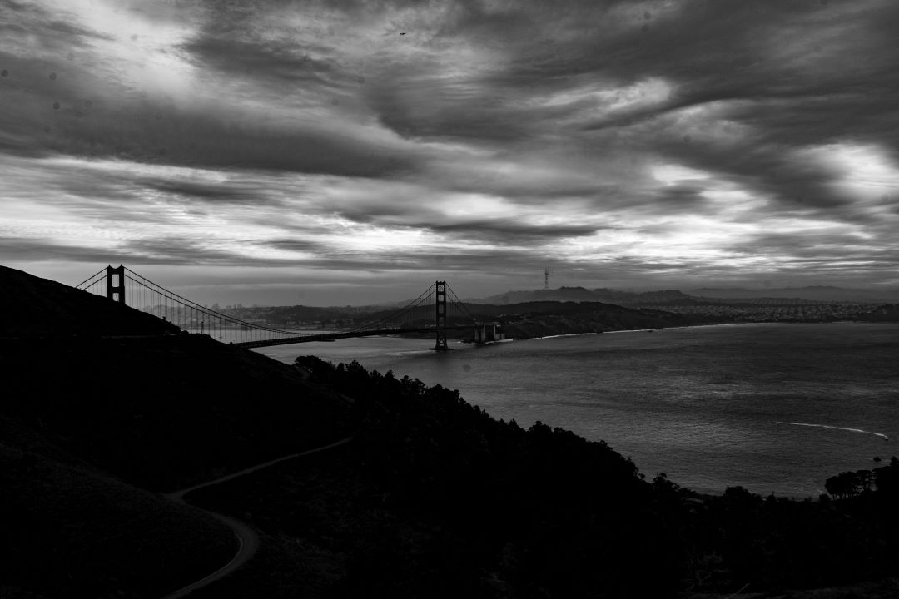
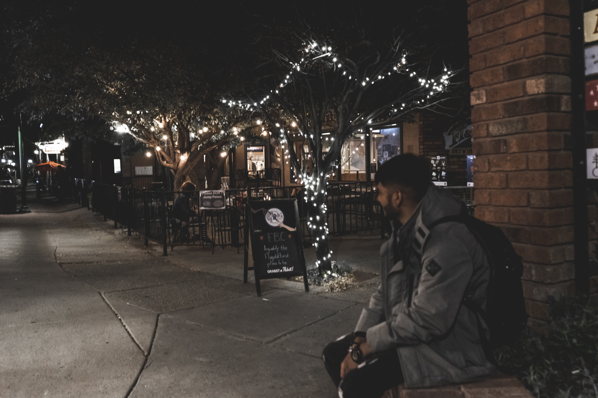
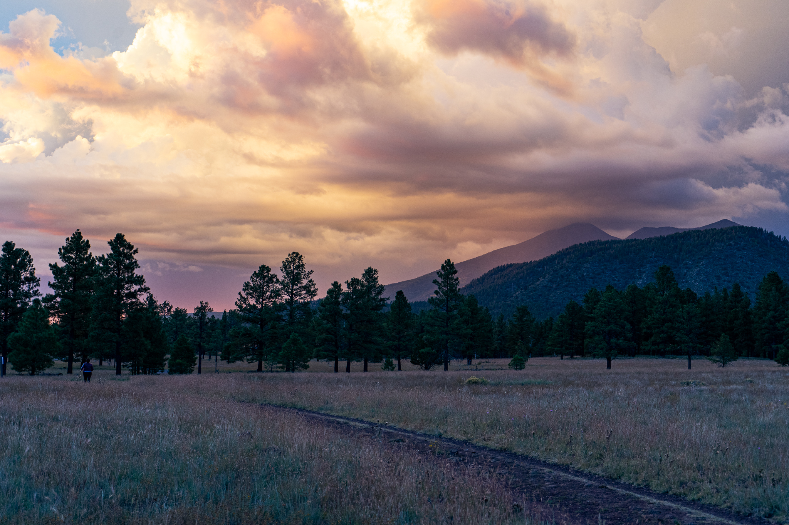

About Me
As a computer science student with a passion for photography,technology, and automotives,
I bring a unique prespective to every project I undertake. Whether I'm behind the lense,
writing code, or tinkering with enignes, I approach each task with precision, creativity,
and a dedication to excellence. My diverse interests and skills allow me to bring a fresh
prespective to every challenge and deliveer exceptional results.


#welivinglife

The Golden Gate Bridge is an iconic suspension bridge located in San Francisco,
California. It spans 1.7 miles across the Golden Gate Strait, connecting the
city to Marin County. Completed in 1937, the bridge's distinctive orange color
and graceful design have made it one of the most recognizable landmarks in the world.

Car photography is a specialized genre of photography that focuses on capturing the beauty and
elegance of automobiles. It involves using different techniques such as lighting, composition,
and angles to create stunning images that showcase the car's design, details, and personality.
Car photographers often use a variety of equipment, such as high-end cameras, lenses, and lighting tools,
to capture the car's unique features and highlight its sleek lines and curves. Successful car photography
requires creativity, attention to detail, and a deep understanding of the car industry and the art of photography.
Cars and Coffee is a popular informal gathering where car enthusiasts meet to show off their cars,
chat with other enthusiasts, and enjoy coffee. These events typically take place in parking lots or
other outdoor locations, and feature a wide range of cars, from classic muscle cars to modern supercars.
Participants often take pride in their vehicles' unique features and modifications, and share their knowledge
and experiences with others. Cars and Coffee gatherings have become a popular way for car enthusiasts to connect
and share their passion for cars.

Fire falls were a natural phenomenon that occurred in Yosemite National Park's famous
Glacier Point during the late 1800s and early 1900s. It involved pushing burning
embers off the edge of the cliff, creating a stunning visual effect resembling a waterfall
of fire cascading down the granite wall. The tradition stopped in 1968 due to environmental
concerns, but the memory of this mesmerizing display of nature continues to capture the
imaginations of visitors to the park to this day.

Buffalo Park is a public park located in Flagstaff, Arizona. It covers over 200 acres of land and
is home to various wildlife, including a herd of buffalo that can be seen grazing in the fields.
The park offers hiking trails, picnic areas, and a playground for families to enjoy. Visitors can
also enjoy the beautiful views of the San Francisco Peaks and the surrounding forests. Buffalo Park
is a popular destination for locals and tourists alike who enjoy nature and outdoor activities.